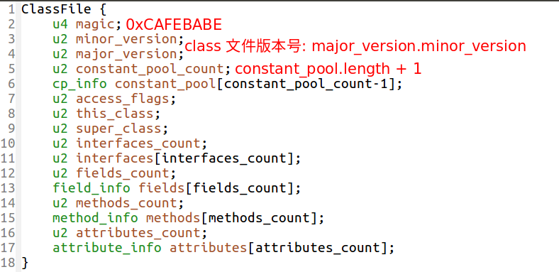
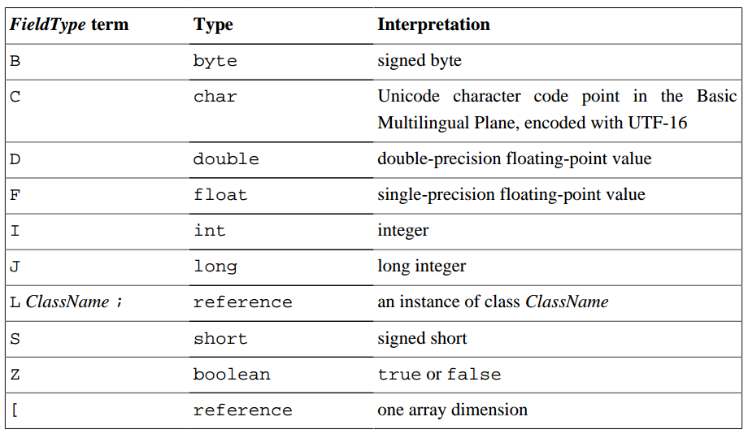

The Java Virtual Machine knows nothing of the Java programming language, only of a particular binary format, the class 文件格式. A class file contains Java Virtual Machine instructions (or bytecodes) and a symbol table, as well as other ancillary information.
This document specifies an abstract machine. It does not describe any particular implementation of the Java Virtual Machine.
To implement the Java Virtual Machine correctly, you need only be able to read the class file format and correctly perform the operations specified therein. Implementation details that are not part of the Java Virtual Machine’s specification would unnecessarily constrain the creativity of implementors. For example, the memory layout of run time data areas, the garbage-collection algorithm used, and any internal optimization of the Java Virtual Machine instructions (for example, translating them into machine code) are left to the discretion of the implementor.
class File FormatThe 原语 data types supported by the Java Virtual Machine are the 数值 types, the 布尔 type, and the returnAddress type. The numeric types consist of the 整数 types and the 浮点 types.
Although the Java Virtual Machine defines a boolean type, it only provides very limited support for it. There are 没有 Java Virtual Machine instructions solely dedicated to operations on boolean values. Instead, expressions in the Java programming language that operate on boolean values are compiled to use values of the Java Virtual Machine int data type.
The values of the returnAddress type are 指针 to the opcodes of Java Virtual Machine instructions. The returnAddress type is used by the Java Virtual Machine’s jsr, ret, and jsr_w instructions.
The Java Virtual Machine defines various run-time data areas that are used during execution of a program. Some of these data areas are created on Java Virtual Machine start-up and are destroyed only when the Java Virtual Machine exits. Other data areas are 每线程. Per-thread data areas are created when a thread is created and destroyed when the thread exits.
pc register:
The Java Virtual Machine can support many threads of execution 同时. Each Java Virtual Machine thread has its own pc (program counter) register.If that method is not native, the pc register contains the 地址 of the Java Virtual Machine 指令 currently being executed. If the method currently being executed by the thread is native, the value of the Java Virtual Machine’s pc register is undefined. The Java Virtual Machine’s pc register is wide enough to hold a returnAddress or a native pointer on the specific platform.
Java Virtual Machine Stacks:
Each Java Virtual Machine thread has a private Java Virtual Machine stack, created at the same time as the thread. A Java Virtual Machine stack stores 帧. A Java Virtual Machine stack is analogous to the stack of a conventional language such as C: it holds 本地变量和部分结果, and plays a part in method invocation and return. Because the Java Virtual Machine stack is never manipulated directly except to push 和 pop 帧, frames may be heap allocated.
This specification permits Java Virtual Machine stacks either to be of a 固定大小或者 to 动态扩展 and contract as required by the computation.
StackOverflowError.OutOfMemoryError.Heap:
The Java Virtual Machine has a heap that is 共享 among all Java Virtual Machine 线程. The heap is the run-time data area from which memory for all class 类实例 and 数组 is allocated.
The heap is created on virtual machine start-up.
OutOfMemoryError.Method Area:
The Java Virtual Machine has a method area that is 共享 among all Java Virtual Machine 线程. The method area is analogous to the storage area for 编译后的代码 of a conventional language or analogous to the “text” segment in an operating system process. It stores 每个类的结构 such as the run-time 常量池，字段，方法数据, and the code for methods and constructors, including the special methods (§2.9) used in class and instance initialization and interface initialization.
OutOfMemoryError.Run-Time Constant Pool:
A run-time constant pool is a per-class or per-interface run-time representation of the constant_pool table in a class file. It contains 几种类型的常量, ranging from 数字常量 known at compile-time to method and 字段引用 that must be resolved at run-time.
Each run-time constant pool is allocated from the Java Virtual Machine’s 方法区. The run-time constant pool for a class or interface is constructed 当类或者接口被创建的时候 by the Java Virtual Machine.
OutOfMemoryError.Native Method Stacks:
StackOverflowError.OutOfMemoryError.A frame is used to store data and partial results, as well as to perform 动态链接，方法返回值，分发异常。
A new frame is 每次方法调用的时候被创建. A frame is destroyed when its method invocation completes, whether that completion is normal or abrupt (it throws an uncaught exception). Frames are allocated from the Java Virtual Machine stack (§2.5.2) of the thread creating the frame. Each frame has its 自己的本地变量数组 (§2.6.1), its 自己的操作数栈 (§2.6.2), and a 指向运行常量池的一个引用 (§2.5.5) of the class of the current method.
只有一个帧, the frame for the executing method, is active at any point in a given thread of control. This frame is referred to as the current frame, and its method is known as the current method. The class in which the current method is defined is the current class.
Note that a frame created by a thread is local to that thread and 无法在另外一个线程中被引用.
Local Variables:
Each frame contains an array of variables known as its local variables. The length of the local variable array of a frame is determined at 编译阶段.
Local variables are addressed by indexing. The 索引 of the 第一个 local variable is 0. A value of type long or type double 占据两个连续的 local variables.
The Java Virtual Machine uses local variables to pass parameters on method invocation. On 类方法调用, any parameters are passed in consecutive local variables starting from local variable 0. On 实例方法调用 invocation, local variable 0 is always used to pass a reference to the object on which the instance method is being invoked (this in the Java programming language). Any parameters are subsequently passed in consecutive local variables starting from local variable 1.
操作数栈:
Each frame contains a last-in-first-out (LIFO) stack known as its operand stack.
The operand stack is 首次创建是空的 when the frame that contains it is created. The Java Virtual Machine supplies instructions to load constants or values 从 local variables or fields 到 the operand stack. Other Java Virtual Machine instructions 取 operands from the operand stack, operate on them, and 放回 the result back onto the operand stack. The operand stack is also used to prepare parameters to be passed to methods and to receive method results.
动态链接:
Each frame contains a reference to the run-time constant pool for the type of the current method to support dynamic linking of the method code. The class file code for a method refers to methods to be invoked and variables to be accessed via symbolic references. Dynamic linking 翻译 these symbolic method references into concrete method references, 必要的时候加载类 as necessary to resolve as-yet-undefined symbols, and translates variable accesses into appropriate offsets in storage structures associated with the run-time location of these variables.
The Java Virtual Machine 没有指定 any particular 内部结构 for objects.
At the level of the Java Virtual Machine, every 构造器 written in the Java programming language appears as an instance initialization method that has the special name <init>. Instance initialization methods may be invoked only within the Java Virtual Machine by the invokespecial instruction.
A class or interface has 最多一个 class or interface initialization method and is initialized (§5.5) by invoking that method. The initialization method of a class or interface has the special name <clinit>, takes no arguments, and is void.
In a class file whose version number is 51.0 or above, the method 必须 additionally have its ACC_STATIC flag (§4.6) set in order to be the class or interface initialization method.
Each 指令 takes the form:
|
|
例如:
|
|
Synchronization in the Java Virtual Machine is implemented by monitor entry and exit, either explicitly (by use of the monitorenter and monitorexit instructions) or implicitly (by the method invocation and return instructions).
|
|
被编译为:
|
|
class File FormatClassFile 结构体
A descriptor is a string representing the 类型 of a field or method.
Interpretation of field descriptors:

The method descriptor for the method:
|
|
is:
|
|